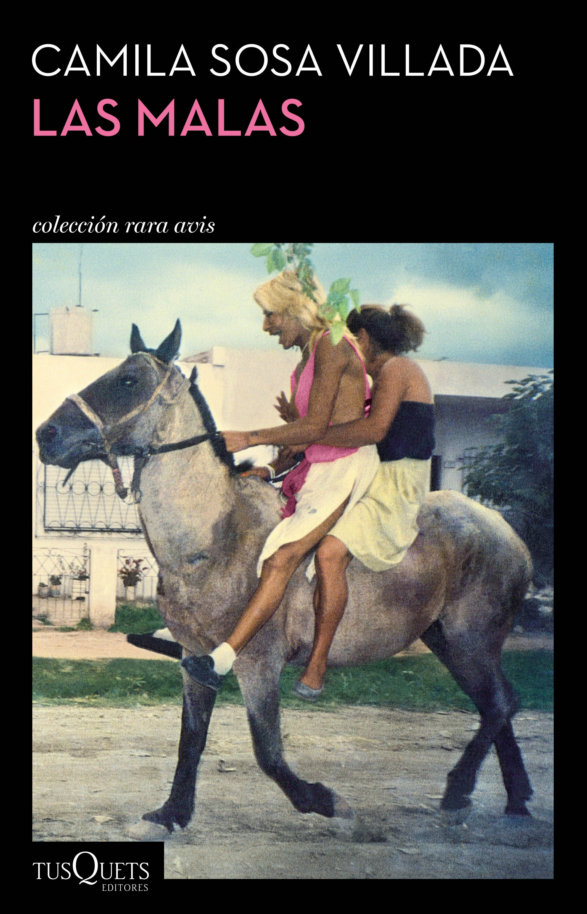
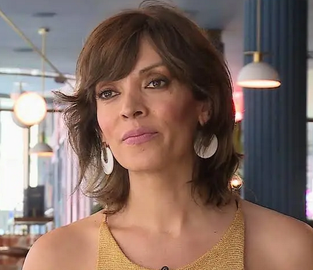
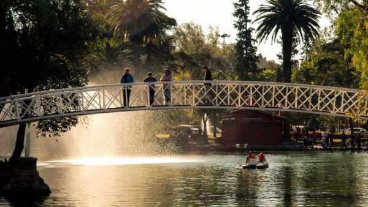
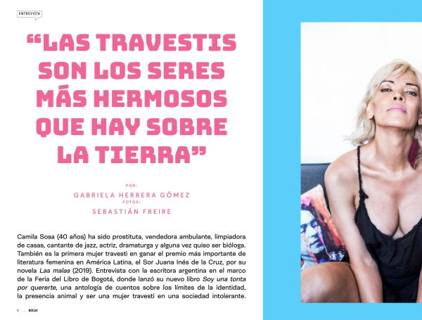
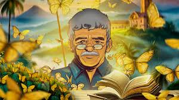
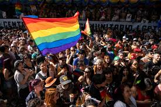

Tesina de Grado

📚 "Las Malas" - Editorial Tusquets

✍️ Camila Sosa Villada, escritora y actriz argentina
Este trabajo se adentra en lo que denominamos la "arquitectura del milagro", analizando las piezas lingüísticas y simbólicas que permiten que la vida travesti se inscriba en la historia no como una nota al pie del horror, sino como un despliegue de belleza y resistencia política.
A través de una prosa poética y visceral, Sosa Villada construye un relato que es tanto testimonio como ficción, explorando temas de identidad, marginalidad, violencia y resistencia y construyendo, a través del realismo mágico en sintonía con las disidencias sexuales una nueva forma de escribir la historia travesti.
Analiza transformaciones corporales y animalidad que resignifican el cuerpo, convirtiendo lo "monstruoso" en una forma de resistencia frente a la deshumanización.
Explora las rupturas del tiempo lineal (ciclos, resurrecciones, mitos) que dialogan con las vidas precarias, desafiando la normatividad cishetero.
Examina la construcción de redes afectivas y vínculos no normativos que disputan el modelo familiar hegemónico.
Investiga figuras espectrales y apariciones milagrosas que representan las formas intermitentes en que las disidencias aparecen o desaparecen en el espacio social.
Aborda el uso de la hibridez, el exceso y la revalorización del insulto para producir una voz narrativa soberana que subvierte el canon.
Define el realismo mágico como estrategia para denunciar violencias estructurales y narrar la supervivencia como un milagro y resurrección cotidiana.
Áreas de estudio:
La presente tesis emplea una metodología de corte cualitativo, centrada en la interpretación profunda y densa de los significados y las estrategias discursivas presentes en la obra Las Malas. El núcleo analítico de este trabajo reside en la creación de seis categorías originales, diseñadas para desentrañar la complejidad de la novela. Estas categorías no fueron impuestas de manera externa, sino que surgieron de un proceso de lectura intensiva y codificación inductiva.
La urgencia de este trabajo radica en la histórica deshumanización y patologización de las identidades travestis en el discurso social y literario. El problema de investigación no solo giró en torno a una cuestión estética, sino a una necesidad política: comprender cómo la literatura puede romper el cerco de la precariedad biológica. Investigar Las Malas permitió evidenciar que el lenguaje no es un terreno neutral, sino el espacio donde se disputa el derecho a existir con dignidad, belleza y memoria, transformando una realidad de exclusión en un territorio de soberanía narrativa.
En definitiva, Las Malas es mucho más que una novela; es un mapa fundacional. Esta tesis ha demostrado que, a través de la arquitectura del milagro, la obra le ha otorgado a la disidencia sexual un lugar indestructible en la literatura universal. Al transformar la marginalidad en el epicentro de la belleza y la resistencia política, Camila Sosa Villada nos recuerda que, cuando la realidad se vuelve un territorio de muerte, la ficción es el único milagro capaz de hacernos renacer.
Imágenes que acompañan el universo de Las Malas:

Parque Sarmiento
Escenario central de la novela en Córdoba, Argentina

Literatura Travesti
Una nueva voz en la literatura latinoamericana contemporánea

Realismo Mágico
La arquitectura del milagro en cada página

Comunidad y Resistencia
Redes de cuidado y parentescos disidentes
Entrevistas y presentaciones de Camila Sosa Villada sobre Las Malas y su obra: